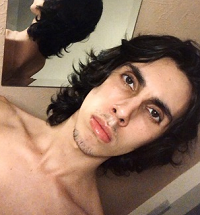

Home | Iris Oliveira | Mateus Dobbins | Tabela de curiosidades | Sites favoritos | Descobrindo tags | Descobrindo Propriedades CSS | Contato

Formado em Produção e Multimídia pela Universidade Santa Cecília e atualmente cursando Sistemas para Internet pela Fatec, Mateus Dobbins Sanches (ou midos, como conhecido no mundo dos jogos online) é filho de Gislaine Fernandes Dobbins e Reginaldo Franco Sanches, e busca se tornar um ótimo e competente front-end.
Gosta de jogar e assistir séries animadas e filmes, é um pouco fechado e não gosta muito de socializar mas é leal para os que estão com ele.
Sua frase favorita é:
"Veja a luz e siga,
mas não fique cego" - MC Orochi